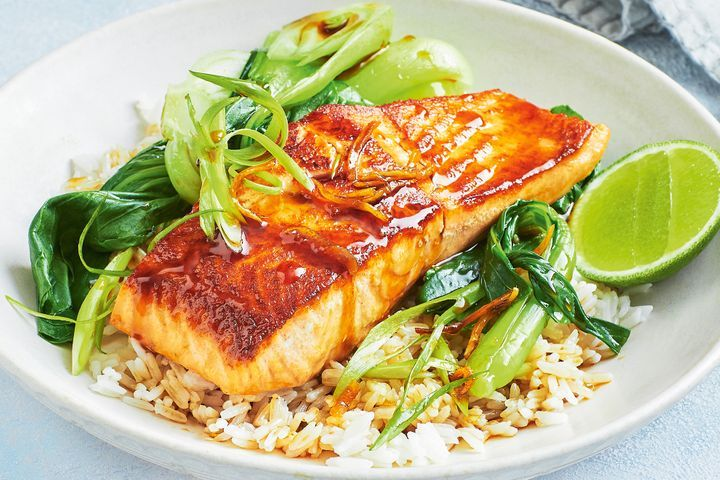

Sticky Vietnamese Salmon

A flavourful and tasty fried rice dish that can be made with any type of meat and vegetable
This dish is very popular globally, originating from China
Fun Fact! This dish can be cooked in 20 minutes
Ingredients
- 1 tbsp vegetable oil
- 4 (about 180g each) skinless salmon fillets
- 4cm-piece fresh ginger, peeled, cut into matchsticks
- 2 garlic cloves, thinly sliced lengthways
- 1 long fresh red chilli, halved lengthways
- 100g (1/2 cup, firmly packed) brown sugar
- 60ml (1/4 cup) fish sauce
- 1 tbsp fresh lime juice
- 1 bunch baby pak choy, halved lengthways
- 1 green shallot, thinly sliced diagonally
- Steamed jasmine rice, to serve
- Lime cheeks, to serve
Steps
- Heat oil in a non-stick frying pan over mediumhigh heat. Cook the salmon , top-side down,
for 2 minutes or until golden. Transfer to a plate.
- Add ginger , garlic and chilli to pan. Cook, stirring, for 1 minute or until aromatic.
Add sugar , fish sauce and lime juice . Stir until sugar dissolves. Reduce heat to low.
Return salmon, top-side up, to pan. Cover and cook for 2 minutes.
- Add the pak choy . Cook, covered, for 2 minutes or until pak choy is bright green and
salmon flakes easily when tested with a fork. Uncover. Simmer for 2 minutes or until sauce
thickens slightly. Divide among serving bowls. Top with the shallot . Serve with rice and lime cheeks .